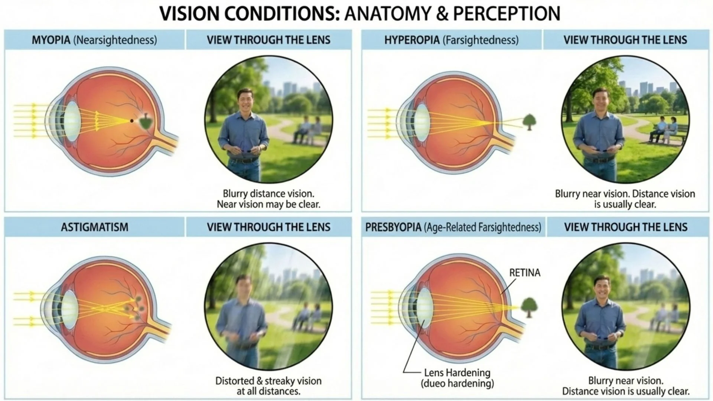

ปวดหัวทั้งที ไม่ได้แปลว่าปวดหัวเหมือนกันทุกคน
หลายคนปวดหัวบ่อย กินยาแก้ปวดบ้าง นอนหลับบ้าง แต่ก็ยังกลับมาปวดอีก อาจเป็นเพราะ ต้นเหตุอยู่ที่ตา ไม่ใช่ที่หัว
งานวิจัยจาก International Headache Society (IHS) พบว่า อาการปวดหัวจากสายตาหรือที่เรียกว่า HAREHARE ย่อมาจาก Headache Associated with Refractive Errors คือปวดหัวที่เกิดจากค่าสายตาที่ยังไม่ได้รับการแก้ไข มักเป็นอาการปวดบริเวณหน้าผากและรอบดวงตา มักแย่ลงช่วงบ่าย-เย็น และเป็นมากขึ้นเมื่อใช้สายตานาน
ในบทความนี้ เราจะแยกให้เห็นชัดๆ ว่า ปวดหัวแต่ละแบบบอกว่าสายตาคุณมีปัญหาอะไร เพื่อให้คุณเข้าใจตัวเองก่อนมาตรวจ
ปัญหาสายตา 4 ประเภทที่ทำให้ปวดหัว
ก่อนจะไปดูอาการปวดหัว มาทำความเข้าใจปัญหาสายตาแต่ละแบบกันก่อน เพราะแต่ละชนิดทำให้ ตาทำงานหนักคนละแบบ นำไปสู่การปวดหัวที่ต่างกัน

สายตาสั้น (Myopia)
มองไกลไม่ชัด มองใกล้ชัด ตาบีบ-หรี่ตาเวลามองไกล
สายตายาว (Hyperopia)
มองใกล้ไม่ชัด ตาต้องทำงานหนักตลอดเวลาเพื่อโฟกัส
สายตาเอียง (Astigmatism)
ภาพเบลอทั้งใกล้และไกล ไม่ว่าจะมองระยะไหนก็ไม่ชัด
สายตายาวตามอายุ (Presbyopia)
อ่านหนังสือไม่ชัด มักเริ่มหลัง 40 ปี เลนส์ตาแข็งขึ้น
จากการศึกษาที่เก็บข้อมูลผู้ป่วย 4,800 ราย พบว่า 42% มีสายตาสั้น, 28% สายตายาว, 17% สายตาเอียง และมีเพียง 13% เท่านั้นที่สายตาปกติ ทั้งสามกลุ่มนั้นต่างก็พบความสัมพันธ์กับอาการปวดหัว
— Parmar et al., International Journal of Community Medicine and Public Health, 2023ปวดตรงไหน? แต่ละสายตาบอกอะไร
แต่ละปัญหาสายตาทำให้กล้ามเนื้อตาและกล้ามเนื้อรอบดวงตาตึงคนละจุด จึงทำให้ปวดหัวต่างตำแหน่งกัน

-
🔵
สายตาสั้น — ปวดบริเวณขมับและหน้าผากด้านหน้า
เวลามองไกลไม่ชัด สมองสั่งให้ตาบีบกล้ามเนื้อรอบดวงตาเพื่อพยายามโฟกัส (เหมือนรูรับแสงที่แคบลง) กล้ามเนื้อรอบดวงตาและศีรษะด้านหน้าจึงเกร็งตึงจนปวดหัว มักเป็นหลังจากขับรถ ดูหนัง หรือมองจอในระยะไกล
📍 ขมับ + หน้าผาก + รอบดวงตา -
🟠
สายตายาว — ปวดหน้าผาก หัวตา และบริเวณรอบกระบอกตา
คนสายตายาวต้องAccommodateAccommodation คือความสามารถของเลนส์ตาในการปรับความโค้งเพื่อโฟกัสวัตถุระยะต่างๆ ยิ่งต้องโฟกัสใกล้มาก ตาก็ยิ่งต้องทำงานหนัก (ปรับโฟกัส) มากกว่าคนปกติตลอดเวลา แม้แต่การมองไกลก็ต้องออกแรง กล้ามเนื้อในดวงตาจึงล้าอย่างต่อเนื่อง นำไปสู่การปวดหัวหน้าผากและหัวตา มักเป็นมากขึ้นช่วงบ่าย
📍 หน้าผาก + หัวตา + รอบกระบอกตา -
🟢
สายตาเอียง — ปวดหน้าผาก เบ้าตา บางรายปวดรอบศีรษะ
เมื่อกระจกตาไม่กลมสนิท แสงที่ตกบนจอประสาทตาจะไม่โฟกัสเป็นจุดเดียว สมองต้องพยายาม "ประมวลผล" ภาพที่เบลอตลอดเวลา เหมือนคอมพ์ที่ต้องประมวลผลหนักมากโดยไม่หยุด งานวิจัยพบว่า สายตาเอียงเป็นสาเหตุปวดหัวที่พบบ่อยที่สุด เพราะรบกวนการมองเห็นทุกระยะ
📍 หน้าผาก + เบ้าตา + ขมับ (รอบศีรษะ) -
🟣
สายตายาวตามอายุ (อ่านหนังสือ) — ปวดหัวตา หน้าผาก และไหล่
เมื่ออายุ 40 ปีขึ้นไป เลนส์ตาเริ่มแข็ง ยืดหยุ่นน้อยลง ทำให้การโฟกัสใกล้ต้องออกแรงมากขึ้น คนที่ยังไม่มีแว่นอ่านหนังสือมักชดเชยด้วยการเกร็งกล้ามเนื้อคอและไหล่ เพื่อยืดระยะห่างจากหนังสือ นอกจากปวดหัวหน้าผากแล้ว มักปวดต้นคอและไหล่ร่วมด้วย
📍 หัวตา + หน้าผาก + คอ + ไหล่
ทำไมสายตาถึงทำให้ปวดหัวได้?
ตาและสมองทำงานเชื่อมกันตลอดเวลา เส้นประสาทที่รับข้อมูลจากตา (เส้นประสาทคู่ที่ 5 หรือ Trigeminal nerve) ก็เป็นเส้นเดียวกับที่รับความรู้สึกบริเวณหน้าผาก ขมับ และหน้า ดังนั้นเมื่อตา "ทำงานหนัก" มากเกินไป สัญญาณความเครียดจึงส่งไปตามเส้นประสาทนี้ทำให้รู้สึกปวดบริเวณหัวได้
ปวดหัวจากสายตาต่างจากไมเกรนตรงไหน? ปวดหัวจากสายตามักเป็นแบบ "รู้สึกตึงๆ กดๆ" ไม่ใช่ปวดตุบๆ หนักๆ ข้างเดียวแบบไมเกรน และมักดีขึ้นเมื่อพักตา หรือหลับตา ไม่ค่อยมีอาการคลื่นไส้ อาเจียน หรือกลัวแสง
งานวิจัยที่ตีพิมพ์ใน Revue Neurologique (2021) ศึกษาผู้ป่วย 90 คน พบว่าอาการปวดหัวจากสายตา 90% เป็นทุกวัน และ 82% เป็นมากในช่วงบ่าย-เย็น สอดคล้องกับการที่ตาทำงานสะสมมาทั้งวัน และหลังจากแก้ไขค่าสายตาด้วยแว่นที่ถูกต้อง ผู้ป่วย 100% มีอาการปวดหัวดีขึ้น
งานวิจัยจาก PMC (2024) ที่ศึกษากลุ่มตัวอย่างในคลินิกตาพบว่า สายตาเอียงแบบ ATR (เอียงตามแนวขวาง) และสายตายาวเล็กน้อย มีความสัมพันธ์กับอาการปวดหัวสูงที่สุด โดยเฉพาะปวดบริเวณหน้าผากและรอบดวงตา
— Wajuihian SO., Exploring Correlations between Headaches and Refractive Errors, PMC 2024เมื่อไหร่ควรมาตรวจวัดสายตา?
หากคุณมีอาการเหล่านี้ ควรนัดตรวจวัดสายตาโดยเร็ว อย่าปล่อยทิ้งไว้เพราะการใช้ตาหนักโดยที่ค่าสายตายังไม่ถูกแก้ไข อาจทำให้ค่าสายตาแย่ลงเร็วขึ้นได้
- ปวดหัวหน้าผากบ่อย โดยเฉพาะช่วงบ่าย-เย็น
- ปวดหัวหลังใช้คอมพิวเตอร์ อ่านหนังสือ หรือดูโทรศัพท์นาน
- ต้องหรี่ตาหรือบีบตาเวลามองของในระยะต่างๆ
- รู้สึกตาล้า เคืองตา น้ำตาไหลบ่อยโดยไม่มีสาเหตุ
- อ่านหนังสือแล้วต้องถือห่างออกไปเรื่อยๆ (อายุ 40+)
- ปวดคอและไหล่ร่วมกับปวดหัวหลังอ่านหนังสือ
ทำไมปวดมากขึ้นเรื่อยๆ ตลอดวัน? เรื่องของ "พลังงานสำรองในการเพ่ง"
นี่คือเรื่องที่หลายคนไม่เคยได้ยิน แต่อธิบายได้ชัดเจนมากว่า ทำไมคนเดียวกัน ตื่นเช้ามาไม่ปวดหัว แต่พอบ่ายสองก็ปวดทนไม่ไหว
การที่ตาโฟกัสหรือ AccommodateAccommodation คือการที่กล้ามเนื้อวงกลมในดวงตา (Ciliary muscle) หดตัวเพื่อเปลี่ยนความโค้งของเลนส์ตา ทำให้โฟกัสในระยะต่างๆ ได้ กระบวนการนี้ใช้ ATP เป็นเชื้อเพลิง ไม่ใช่แค่กล้ามเนื้อทำงาน — แต่สมองต้องประมวลผลและใช้พลังงานในรูป ATP ไปด้วยพร้อมกัน งานวิจัยพบว่าสมองมนุษย์ใช้ ATP วันละกว่า 25 โมล ซึ่งนับเป็นอวัยวะที่กินพลังงานมากที่สุดในร่างกาย
ของร่างกาย
ใช้ทั้งหมด
ตอน Visual Cortex ทำงาน
* แนวคิด Accommodative Reserve — ยิ่งสายตาไม่ถูกต้อง ยิ่งเผา reserve เร็วกว่าเท่าตัว
ง่ายๆ คือ ร่างกายมี "พลังงานสำรองในการเพ่ง" อยู่จำนวนหนึ่ง ถ้าค่าสายตาไม่ถูกต้อง ตาต้องออกแรงพิเศษทุกครั้งที่โฟกัส แบตก็หมดเร็วกว่าปกติ พอพลังงานสำรองหมด สมองและกล้ามเนื้อรอบดวงตาก็ส่งสัญญาณ "ล้าแล้ว" ออกมาเป็นอาการปวดหัว
งานวิจัยด้านการเพ่ง (Accommodative Insufficiency) พบว่าผู้ที่มีปัญหาสายตาที่ยังไม่ได้รับการแก้ไขนั้น สามารถโฟกัสได้ชั่วคราว แต่ต้องออกแรงมากจนเกิด Asthenopia ซึ่งอาการจะเป็นมากขึ้นตามระยะเวลาการใช้งาน ไม่ใช่ปวดตั้งแต่ต้น
— AOA Clinical Guidelines: Care of the Patient with Accommodative and Vergence Dysfunction, 2023😴 นอนน้อย = เติมน้ำมันไม่เต็ม
กล้ามเนื้อปรับโฟกัส (Ciliary muscle) ต้องการการนอนหลับเพื่อฟื้นตัวและซ่อมแซม เหมือนรถที่ต้องเติมน้ำมันในตอนกลางคืน ถ้านอนไม่พอ รถก็ออกถนนโดยที่ถังน้ำมันยังไม่เต็ม — วันนั้นก็จะปวดหัวเร็วกว่าปกติมาก
เกือบเต็มถัง
แทบหมดตั้งแต่เช้า
ช่วงสาย-เที่ยง
| สถานการณ์ | Reserve ตอนเช้า | ปวดหัวเมื่อไหร่ |
|---|---|---|
| ✅ นอนพอ + แว่นถูกต้อง | ~90% | แทบไม่ปวด หรือค่ำมากๆ |
| ⚠️ นอนพอ + แว่นผิด/ไม่มีแว่น | ~90% แต่เผาเร็ว | บ่ายสอง-สาม |
| ⚠️ นอนน้อย + แว่นถูกต้อง | ~40–50% | เที่ยง-บ่าย |
| 💀 นอนน้อย + แว่นผิด/ไม่มีแว่น | ~25% | สายๆ หรือตั้งแต่เช้า |
นอกจากนี้ งานวิจัยด้าน Brain Fatigue ยังพบว่าการอดนอนทำให้ AstrocyteAstrocyte คือเซลล์ในสมองที่ทำหน้าที่ส่งกลูโคสไปเลี้ยงเซลล์ประสาท เมื่ออดนอน Astrocyte ทำงานได้ลดลง ทำให้การส่งพลังงานในสมองไม่มีประสิทธิภาพ ทำงานลดลง ส่งผลให้การส่งกลูโคสเป็นเชื้อเพลิงให้เซลล์ประสาทในสมองไม่มีประสิทธิภาพเพียงพอ ยิ่งทำให้ threshold ของความปวดหัวต่ำลง ปวดง่ายขึ้น
วงจรอุบาทว์ที่ต้องระวัง: ตามีปัญหาสายตา → ใช้พลังงานมากเกินปกติ → ปวดหัว → นอนไม่หลับเพราะปวด → กล้ามเนื้อฟื้นตัวไม่ทัน → วันรุ่งขึ้นปวดเร็วและหนักขึ้น → วนซ้ำ การแก้ไขค่าสายตาให้ถูกต้องคือการตัดวงจรนี้ที่ต้นเหตุ
สมองมนุษย์ใช้กลูโคสเป็นเชื้อเพลิงหลัก แม้จะมีน้ำหนักเพียง 2% ของร่างกาย แต่กินกลูโคสไปถึง 25% ของกลูโคสทั้งหมดที่ร่างกายใช้ และในสมองนั้น ระบบการมองเห็น (Visual System) ถูกจัดอยู่ในกลุ่มที่ใช้พลังงานสูงที่สุด งานวิจัยวัดค่าได้ว่าระดับกลูโคสใน Visual Cortex ลดลงทันทีระหว่างการมองเห็นที่ต้องประมวลผลหนัก และเมื่อพลังงานในพื้นที่นั้นไม่เพียงพอ จะเกิดความผิดปกติของ Neurotransmitter นำไปสู่อาการปวดหัว
— Wong-Riley MTT, "Energy metabolism of the visual system", Eye and Brain, 2010; Del Moro L. et al., J Pain, 2022นี่ไม่ใช่ความอ่อนแอด้านใจ แต่เป็น สัญญาณชีววิทยาจริงๆ ของสมอง การใช้ตาอ่านหนังสือหรือดูจออย่างต่อเนื่องทำให้ Visual Cortex เผาผลาญกลูโคสในอัตราสูงมาก สมองจึงส่งสัญญาณหิวน้ำตาลเพื่อเติมพลังงานให้ทันความต้องการ
ดังนั้นถ้าคุณนั่งทำงานแล้วอยากกินช็อกโกแลต ขนม หรือเครื่องดื่มหวานเป็นพิเศษ — ลองสังเกตว่าค่าสายตาของคุณยังถูกต้องอยู่ไหม เพราะยิ่งตาต้องทำงานหนัก สมองก็ยิ่งร้องขอน้ำตาลมากขึ้น
❓ คำถามที่ถามบ่อย
ปวดหัวบ่อย ลองถามตัวเองก่อนว่า "ตาเป็นเหตุหรือเปล่า?"
ปวดหัวจากสายตาเป็นเรื่องที่พบบ่อยมาก แต่มักถูกมองข้ามเพราะไม่รู้ว่าเชื่อมโยงกัน หากคุณปวดหัวบ่อย โดยเฉพาะช่วงบ่าย-เย็น หรือหลังใช้งานตานาน การตรวจวัดสายตาอย่างละเอียดอาจเป็นคำตอบที่คุณตามหา
ที่ Optical X Vision Care Center เราตรวจวัดสายตาอย่างละเอียดด้วยเครื่องมือมาตรฐาน ห้องตรวจยาว 6 เมตร และ Trial lens สำหรับเลนส์โปรเกรสซีฟกว่า 60 ชิ้น ให้คุณได้ลองก่อนตัดสินใจ